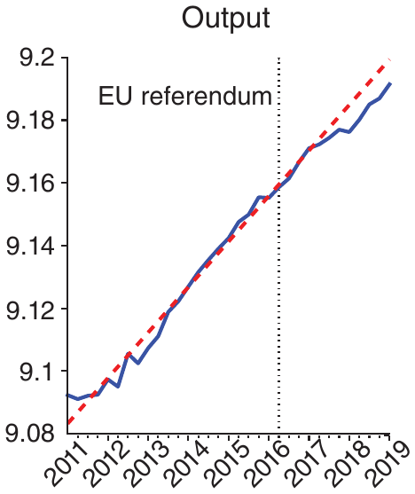
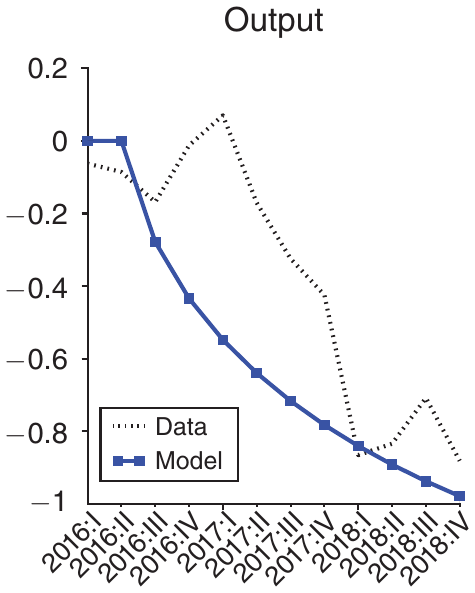
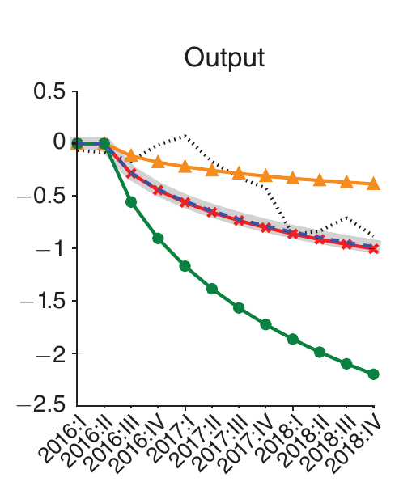

AER: Insights · 2021
News Uncertainty in Brexit United Kingdom
Renato Faccini · Edoardo Palombo
Danmarks Nationalbank · Queen Mary University of London
Why it matters
A sharp recession was expected
Before the vote, policy institutions predicted a sharp recession if Leave won. (HM Treasury 2016)
Instead, output, employment and capital slowly fell below their pre-referendum trend.

UK real GDP per capita (log) and its pre-referendum trend · Figure 1
The question
Does uncertainty matter for the business cycle?
Theory points to two very different paths
Uncertainty shock
Volatility about today's fundamentals. Firms pause, then catch up: a sharp, short-lived V (Bloom 2009).
News uncertainty
Uncertainty about fundamentals years ahead. Brexit changes them only once it happens.
So which kind of uncertainty was Brexit?
The setting
A vote, then years of uncertain negotiations
June 2016
The UK votes to leave the European Union
August 2016
The Bank of England launches the Decision Maker Panel survey of firms
March 2019
First cliff edge, followed by repeated delays
18%
chance firms gave the UK still being in the EU at the end of 2022: 9% a later exit, 9% never
44%
average probability firms gave a no-deal exit by March 2019
Decision Maker Panel, November 2017 to April 2018
The stakes
Firms expected Brexit to cut their sales
Average probability firms attach to each effect of Brexit on their sales, % · Table 1
−7.6%
long-run GDP under a no-deal Brexit implied by these beliefs, in line with the government's central estimate
−4.5%
under a deal (soft Brexit)
Research design
The vote as news about the future
Heterogeneous firms with costly, partly irreversible investment. Brexit changes their productivity only once it happens.
Data
Firms' own beliefs set the uncertainty
Decision Maker Panel, 2017–18
Bank of England survey of UK firms with ten or more employees. About 2,500 CFOs and CEOs give probabilities for when Brexit happens and how it affects their sales.
ONS national accounts, 2011–18
Output and capital per capita and the employment rate, measured against their pre-referendum trend.
The survey disciplines the model; the macro data test it.
Main result
The news alone explains the slowdown

Output, % deviation from trend: model vs data · Figure 2
−1%
output below trend three years after the vote
1.8%
of annual GDP lost in total by end-2018
Employment and capital follow the same gradual path.
What drives it
Bad news, not just uncertainty, drives the fall
Cumulative fall in output by end-2018, model · Figure 3
Firms expected to shrink either way, so they began cutting capital straight away.
Duration
A shorter expected wait does more damage

−3.8%
cumulative GDP loss to end-2018 if talks were expected to last one year, against −1.8% in the baseline
With a quick resolution in sight, more firms freeze investment and wait.
Implications
What Brexit teaches about uncertainty
Future, not present
Uncertainty about future fundamentals brings a gradual decline, not a V-shaped recession.
Expected duration
The longer uncertainty is expected to last, the smaller its near-term effect.
Cliff edges
Repeated deadlines, each expected to be decisive, do the most damage to investment.
American Economic Review: Insights 3 (2): 149–64
News Uncertainty in Brexit United Kingdom
Renato Faccini and Edoardo Palombo
edoardopalombo.com
Faccini & Palombo (2021) · News Uncertainty in Brexit United Kingdom · AER: Insights